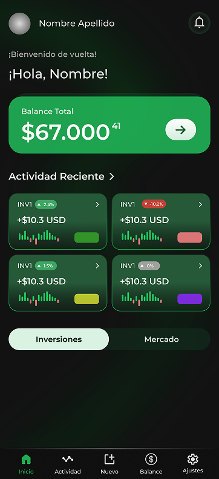
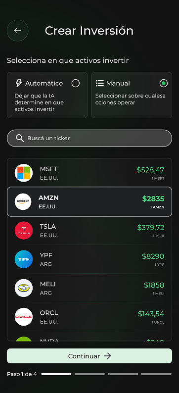
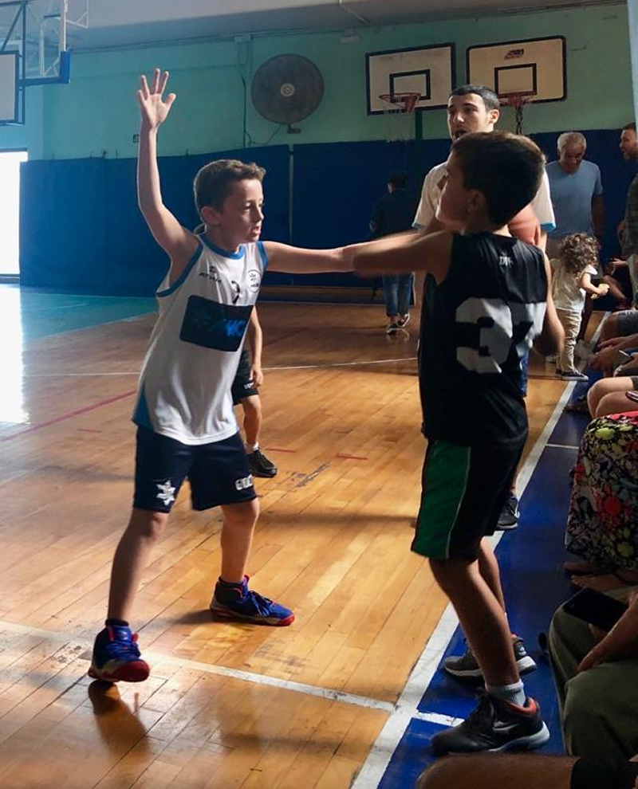
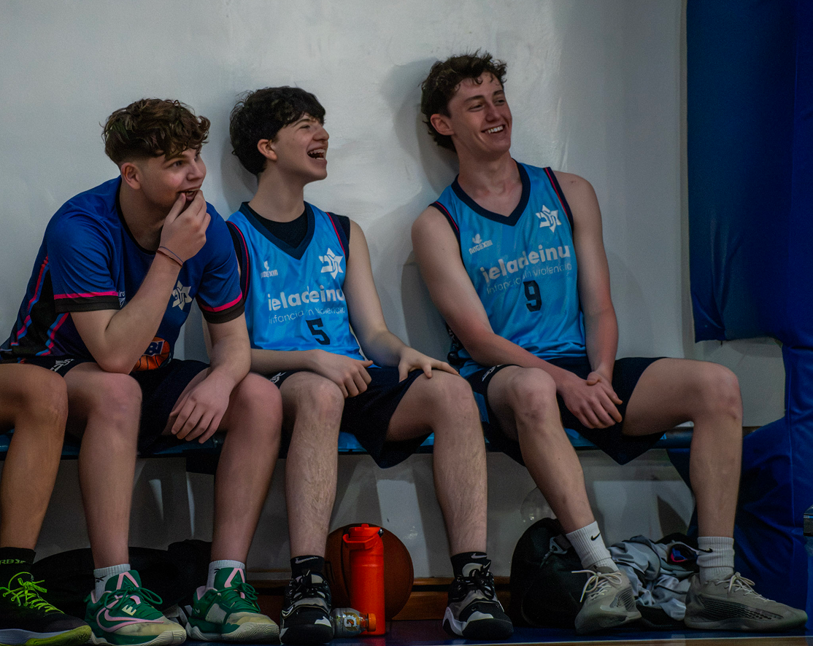
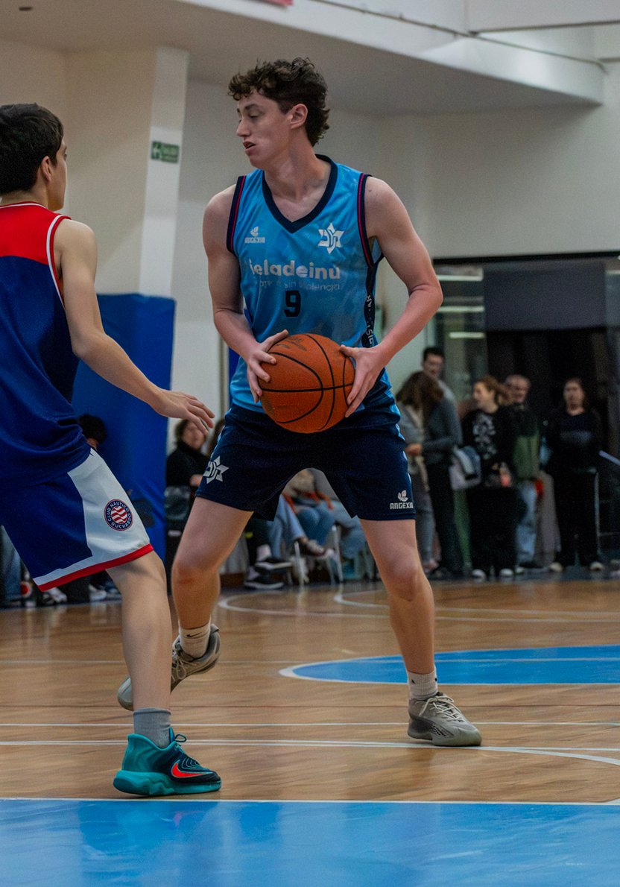
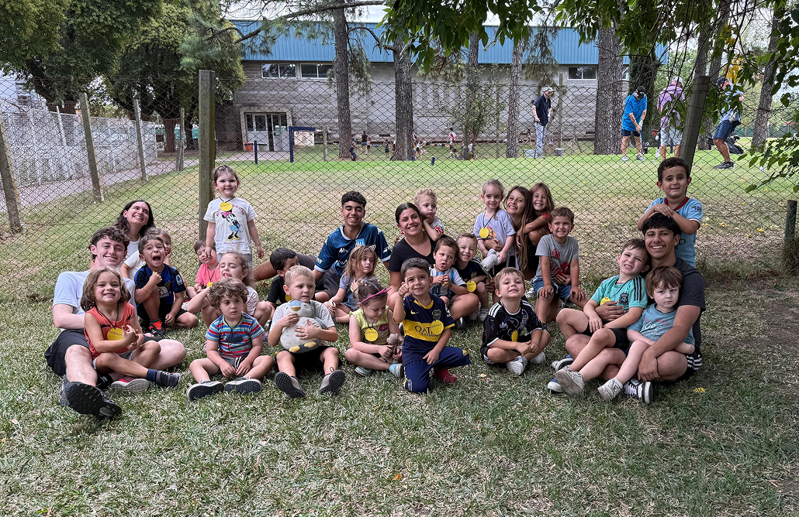
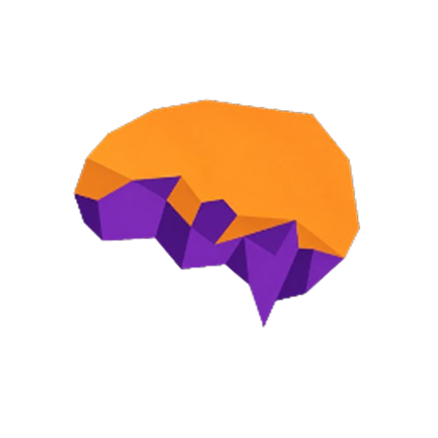

El comienzo
Primer acercamiento al mundo financiero y sus conceptos principales.
01 — FORMACIÓN
A lo largo de la orientación TIC en ORT participé en la creación de proyectos que me permitieron aplicar conocimientos y seguir aprendiendo sobre programación, diseño y desarrollo web.
PROYECTO 01
Una plataforma para explorar, comparar y aprender sobre componentes de PC.
El proyecto reúne información de distintos componentes y permite comparar sus características para ayudar a elegir piezas compatibles según cada necesidad.
PROYECTO 02
Un espacio digital para organizar proyectos, tareas y equipos.
Kronos propone una interfaz de organización en la que se pueden reunir tareas, proyectos y equipos en un mismo lugar, con una estructura clara y visual.
PROYECTO 03
Una experiencia de inversión digital que combina automatización y control.
La aplicación acompaña al usuario en la configuración de su perfil, la selección de activos y el seguimiento de su actividad.


02 — MACABI
Un espacio que me formó tanto dentro de la cancha como fuera de ella, y que me permitió desarrollar habilidades para trabajar y comunicarme con mis pares.

01 / DEPORTE
Juego al básquet en Macabi desde los 8 años. A lo largo de este recorrido aprendí a confiar en mis compañeros, comunicarme, asumir responsabilidades y trabajar por objetivos comunes.



02 / EDUCACIÓN NO FORMAL
Durante dos años me formé en el curso de líderes de Macabi. Actualmente coordino actividades no formales para chicos de 4 años, una experiencia que me permite desarrollar liderazgo, comunicación, organización y compromiso.
03 — INVERSIONES
Un interés por entender cómo funcionan los mercados y cómo los datos pueden ayudar a tomar decisiones más conscientes.

Primer acercamiento al mundo financiero y sus conceptos principales.
Investigar instrumentos, mercados y distintas formas de analizar información.
Relacionar datos, contexto y objetivos para construir un criterio propio.
04 — CONTACTO